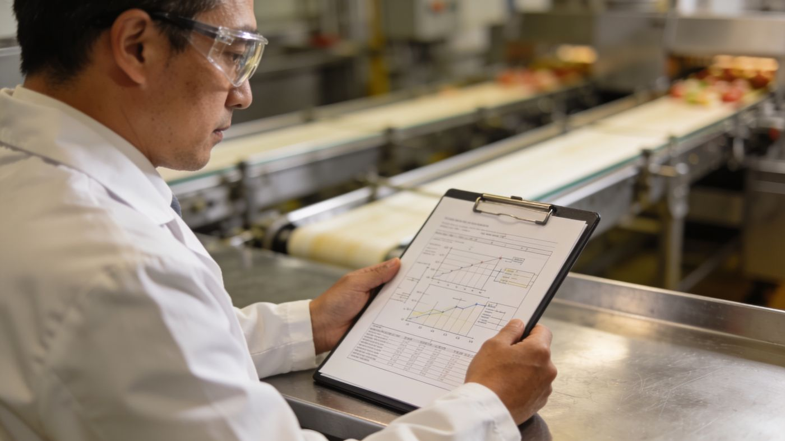
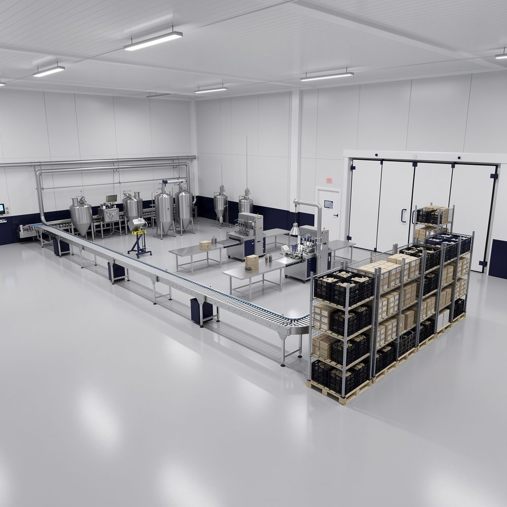
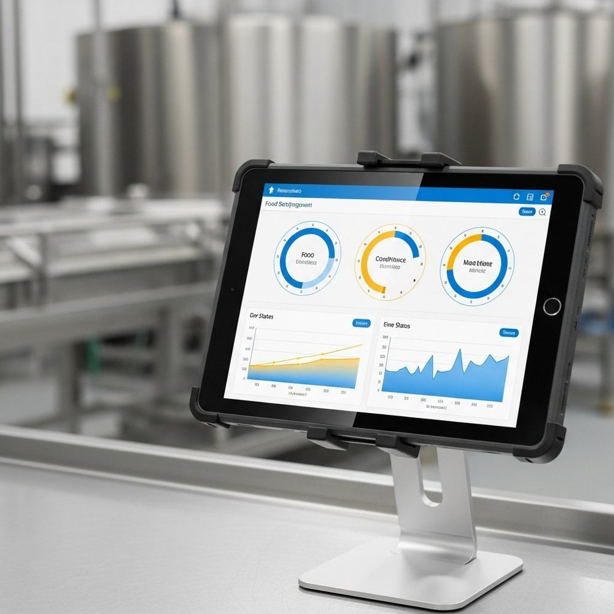
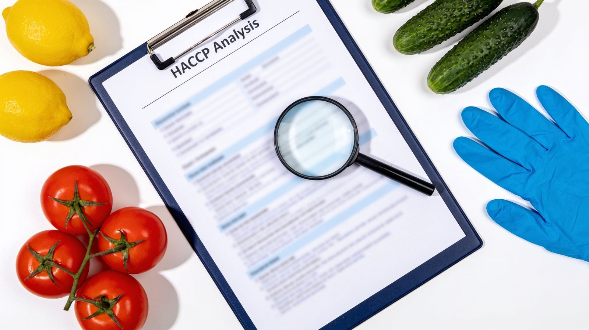

Inocuidad que se certifica. Plantas que producen.
Más de 15 años implementando HACCP, ISO 22000 y BRCGS, y diseñando plantas de alimentos en 3D, para que pases auditorías con confianza y produzcas con eficiencia.
 Diseño de plantas
Diseño de plantasSatisfacción en programas in-company
Del plano a la certificación
Un solo equipo para diseñar, implementar, regularizar y auditar tu planta de alimentos.

01→Sistemas de gestión integral
Implementación de HACCP, ISO 22000, BRCGS y FSSC 22000 adaptada a tu realidad productiva.

02→Ingeniería inmersiva 3D
Layouts modelados para reducir mermas, cruces de flujo y reprocesos antes de construir.
Regulación y compliance
Trámites ante DIGESA y SENASA: registros y habilitaciones sanitarias.

04→Transformación digital
Registros de control y trazabilidad en tiempo real para plantas inteligentes.
Auditoría y capacitación
Programas in-company con diagnóstico técnico y certificado de asistencia.
Mira tu planta antes de construirla
Modelamos zonificación higiénica, flujos de personal y producto, y puntos de control para detectar errores cuando corregirlos todavía es barato.
- 01Flujos sin crucesProducto crudo, terminado, personal y residuos separados desde el diseño.
- 02Zonificación higiénicaÁreas de alto y bajo riesgo definidas según normativa.
- 03Menos mermas y reprocesosDistancias y capacidades optimizadas con el modelo.

 Método Food Tracking
Método Food TrackingUn método claro, sin sorpresas
- 01
Diagnóstico
Visita técnica, brechas frente a la norma y plan priorizado.
- 02
Diseño
Layout 3D, flujos y programas prerrequisito a medida.
- 03
Implementación
Documentación, capacitación del equipo y registros digitales.
- 04
Auditoría y certificación
Simulacro interno y acompañamiento hasta la auditoría final.
Rigor normativo, mentalidad de ingeniería
- ✓Inversión optimizadaDiseño industrial eficiente que reduce costos operativos.
- ✓Calidad asegurada, riesgo minimizadoProtocolos robustos frente a riesgos sanitarios y legales.
- ✓De la ingeniería a la auditoríaUn solo equipo, sin traspasos entre proveedores.

Todo lo que necesitas saber antes de empezar
¿Cuánto tiempo tarda la implementación de un sistema HACCP?
Depende del tamaño y complejidad de la empresa. En promedio, una implementación completa de HACCP (documentación, capacitación y validación) toma entre 6 y 12 semanas. Si ya cuentas con documentación previa, el proceso puede ser más rápido. El diagnóstico inicial gratuito nos permite darte un cronograma realista desde el primer día.
¿Cuánto cuesta implementar HACCP o ISO 22000?
El costo depende del tamaño de la empresa, el número de productos y el nivel de documentación previa. Para darte un precio exacto necesitamos hacer el diagnóstico inicial (gratuito) primero. Lo que sí podemos decirte es que implementar HACCP cuesta significativamente menos que una auditoría fallida, multas sanitarias o la pérdida de un contrato con una cadena de supermercados por incumplimiento normativo.
¿Trabajan fuera de Lima?
Sí. Atendemos empresas en todo el Perú: Lima, Callao y provincias. Para proyectos fuera de Lima coordinamos visitas técnicas según el cronograma del proyecto y complementamos el trabajo presencial con reuniones virtuales para optimizar tiempos y costos de desplazamiento.
¿Qué diferencia a Food Tracking Perú de otras consultorías?
Somos la única consultoría en el Perú que integra tres capacidades en un solo equipo: (1) implementación de sistemas de gestión de inocuidad listos para auditoría, (2) transformación digital del sistema de calidad, y (3) diseño 3D de plantas alimentarias antes de construir. Este tercer punto es nuestro diferenciador más único: no existe un servicio equivalente en el mercado peruano.
¿Necesito HACCP si mi empresa es pequeña o mediana?
Sí. Según el Codex Alimentarius y la normativa peruana (DS 007-98-SA y sus modificatorias), las empresas que fabrican alimentos deben implementar sistemas de control de peligros basados en HACCP, independientemente de su tamaño. Además, si vendes a supermercados o grandes cadenas, el HACCP es prácticamente un requisito obligatorio. Adaptamos el sistema al tamaño y complejidad real de tu operación.
¿Trabajan con empresas que recién están empezando?
Sí. Trabajamos tanto con empresas en etapa de diseño de planta (antes de construir) como con empresas ya operativas que necesitan regularizar o certificar su sistema. Para startups del sector alimentos, la ventaja de trabajar con nosotros desde el inicio es que el diseño de la planta ya sale HACCP-ready, evitando costosas modificaciones después de la construcción.
¿Qué incluye el diagnóstico gratuito?
El diagnóstico inicial sin costo incluye una revisión del estado actual de tu sistema de gestión de inocuidad, identificación de brechas respecto a la normativa aplicable, y una propuesta de ruta para alcanzar tus objetivos de certificación o regularización. Es una sesión de 30 a 45 minutos por videollamada o presencial en Lima.
¿Listo para elevar tus estándares?
Cuéntanos de tu planta. Te respondemos en menos de 24 horas hábiles con una propuesta de diagnóstico.